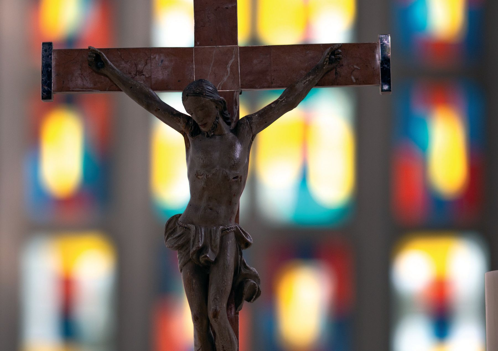
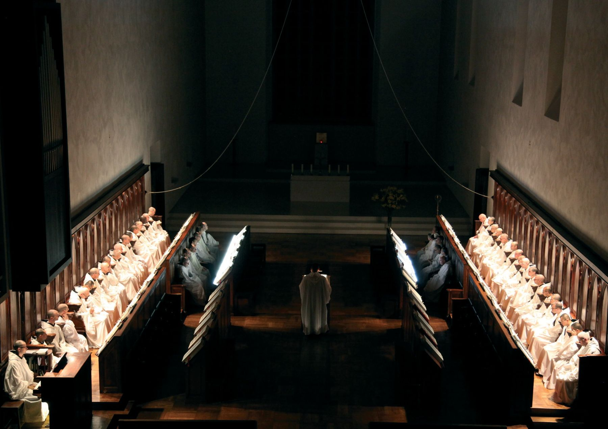

Entre les offices, le moine doit veiller à « la garde du cœur ». Cela signifie maintenir un lien constant et délicat avec Dieu, Notre Seigneur et la Vierge Marie. Ce lien n’est pas une tension forcée ou une concentration nerveuse. Il s’agit plutôt d’une présence calme et intérieure, semblable à l’amour paisible d’un enfant pour sa mère ou d’un ami pour un autre. En effet, il s’agit d’un lien d’amitié spirituelle qui demande une vigilance aimante.
L’invocation : l’axe intime de la vocation
L’oraison jaculatoire, ou invocation, est une courte prière personnelle. Elle est précise et théologiquement juste. Elle exprime l’orientation du cœur et incarne l’axe de la vocation du moine. Dans le flot des pensées quotidiennes, ces invocations doivent être régulièrement glissées pour purifier et recentrer l’âme. C’est comparable au bâton de Moïse purifiant les eaux amères. Dès le début de la vie monastique, chaque moine, avec l’aide d’un Ancien, doit créer et s’approprier une invocation. Celle-ci l’accompagnera toute sa vie.

Forger une invocation : du sur mesure
Forger une invocation avec un jeune frère dès le postulat est un travail délicat. Le Père Maître ne doit pas imposer la sienne. Cela reste vrai même si cela semble plus simple. L’invocation ne peut pas seulement être une réponse émotionnelle. En réalité, elle doit toucher l’identité profonde du futur moine et correspondre à l’appel spécifique de sa vocation. Elle est donc personnelle, façonnée dans le dialogue spirituel et le discernement.

Un art ancien, toujours vivant
Bien que la pratique des invocations puisse paraître démodée ou mécanique, elle joue un rôle essentiel pour maintenir la communion avec Dieu après l’office ou l’oraison. C’est comme garder le lien avec un être aimé à distance. Une photo, un message, un appel permettent de conserver ce lien. L’invocation s’apparente à ces anciens appels brefs. Il s’agit de deux ou trois sonneries qui servaient à dire « je pense à toi » sans mots. C’est cette image qui guide l’enseignement de l’art des invocations.


La simplicité d’un geste, la persévérance d’une vie
En apparence simple, l’invocation s’enseigne en peu de temps. Mais pour l’incarner vraiment, il faut une vie. Elle demande fidélité, effort, ténacité. Elle devient alors ce fil discret mais solide qui relie l’âme de l’homme à Dieu, dans les silences du quotidien.